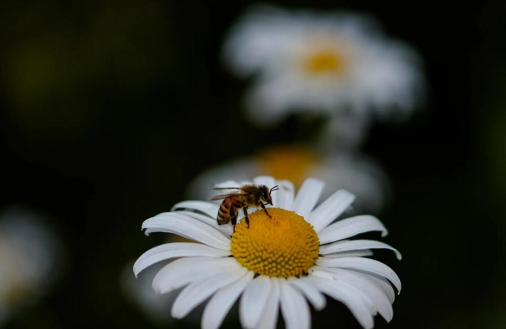

景深核心三要素

📸 景深，听起来有点高大上，但其实它在摄影中可是个常客。简单来说，景深就是相机焦点前后那一段相对清晰的成像范围。不同场景下，我们会用到不同的景深。比如，拍风景照时，大景深能让前后都清晰；而拍人像或者花卉时，小景深则能产生虚化的效果。
🔍 景深（Depth of Field, DOF）是由几个关键因素决定的：物距（物体到相机的距离）、镜头焦距和光圈大小。其中，光圈和焦距对景深的影响最大。
🌐 光圈大小：光圈越大，景深越小；光圈越小，景深越大。
🔍 镜头焦距：焦距越长，景深越小；焦距越短，景深越大。
📏 物距：物距越大，景深越大；物距越小，景深越小。
🌸 前景虚化和背景虚化：在焦点前的虚化叫前景虚化，相应的，在焦点后的虚化叫背景虚化。
📷 掌握景深，你就能更好地控制照片的视觉效果，让照片更有层次感。无论是拍人像、风景还是其他任何题材，景深都是你手中的一把利器。
📷人像片拍摄参数设置
三要素组合：大光圈（f1.4）+ 近距离 + 中长焦距（35mm）
画质取舍：人像摄影可接受最大光圈画质损失，优先保证曝光和虚化效果
安全快门：手持拍摄需注意安全快门速度（如1/125s），配合提高ISO保证曝光
参数联动：大光圈既能控制景深，又能解决暗光环境曝光问题
版权声明：内容均源于网络分享整理，如有侵权请及时联系删除。